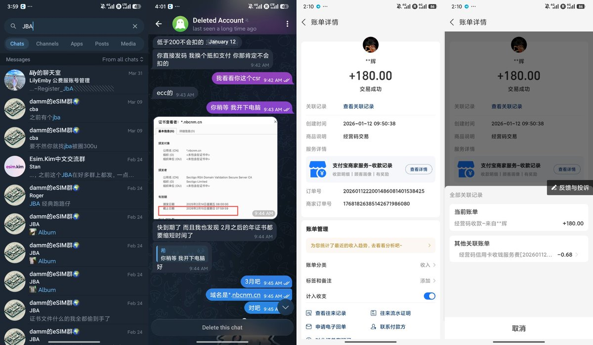
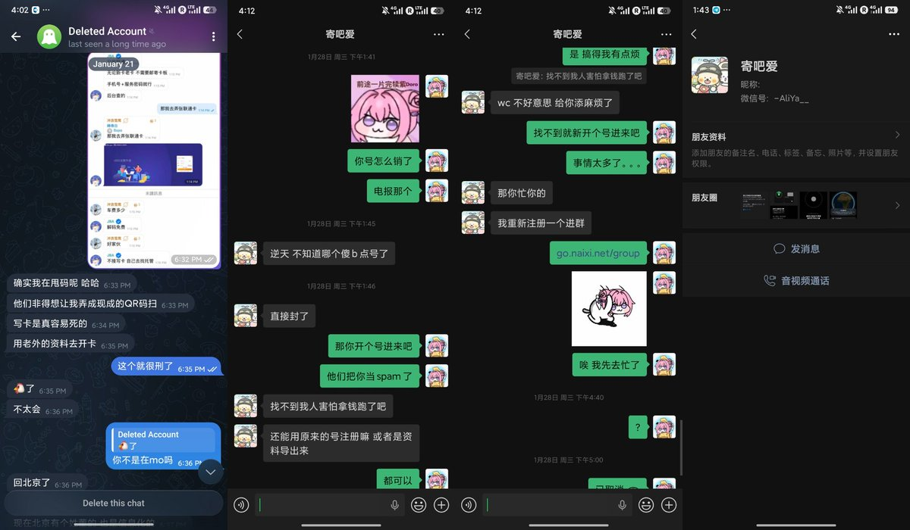
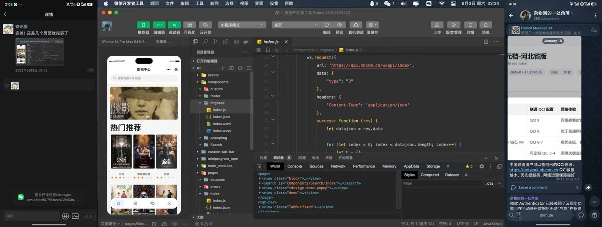
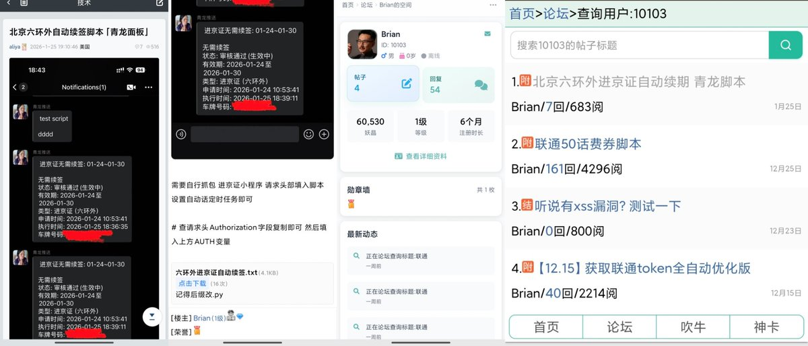
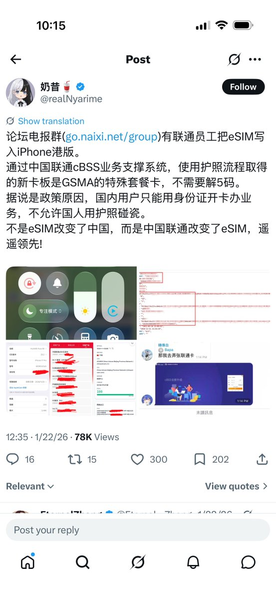
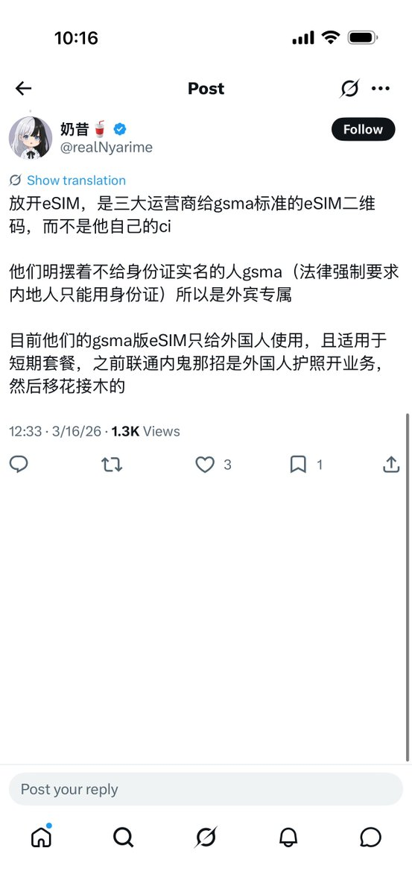

这件事发生今年一月份，当时有自称联通员工（JBA）的人在多个TG群发布了外版iPhone写国内卡的资料，于是将此事发布以引起联通公司重视封堵该方案
自始至终我并没有为其背书过，并在被骗第二天下午为他们提供了详细的信息，与其中一位通过FPS（香港转数快）的受骗者核对上了姓名
该自称员工的人以300U一次写卡，全程未经过奶昔论坛，我也没有收过一分钱。我把我知道的信息公布一下，此人叫陈瑞辉，一开始找我签过SSL证书使用的域名是 https://t.co/WbXcQTLxRs 并使用该实名，与付款信息一致。消息是多个电报群宣传的，JBA唯独做的一件事就是在我们论坛发了个《北京六环外自动续签脚本「青龙面板」》，用户名叫aliya。当时我以为他在论坛独家发的，没想到他在隔壁「妖火论坛」也发了，ID10103用户名Brian，并在一周前有活跃记录
现在的外版写eSIM本质上就是解卡+托管SMDP，再提供一个二维码给你下卡。解开本身就涉及克隆SIM卡了，本身就是非法操作，包括前阵子说的宽带改0业务要寄卡都是有套路的，自己想想手机卡那么重要的东西怎么能直接寄给陌生人
当然我不是甩锅，对于被JBA诈骗的人我在当时就已经提供附图中的所有信息，并建议受骗人报警处理。难道我做的还不够吗，开盒属于泄露公民隐私信息的事，我不敢干。如果技术讨论都要被扣上跟骗子有关系一说，那我一分钱都没捞到是不是很怨？

自始至终我并没有为其背书过，并在被骗第二天下午为他们提供了详细的信息，与其中一位通过FPS（香港转数快）的受骗者核对上了姓名
该自称员工的人以300U一次写卡，全程未经过奶昔论坛，我也没有收过一分钱。我把我知道的信息公布一下，此人叫陈瑞辉，一开始找我签过SSL证书使用的域名是 https://t.co/WbXcQTLxRs 并使用该实名，与付款信息一致。消息是多个电报群宣传的，JBA唯独做的一件事就是在我们论坛发了个《北京六环外自动续签脚本「青龙面板」》，用户名叫aliya。当时我以为他在论坛独家发的，没想到他在隔壁「妖火论坛」也发了，ID10103用户名Brian，并在一周前有活跃记录
现在的外版写eSIM本质上就是解卡+托管SMDP，再提供一个二维码给你下卡。解开本身就涉及克隆SIM卡了，本身就是非法操作，包括前阵子说的宽带改0业务要寄卡都是有套路的，自己想想手机卡那么重要的东西怎么能直接寄给陌生人
当然我不是甩锅，对于被JBA诈骗的人我在当时就已经提供附图中的所有信息，并建议受骗人报警处理。难道我做的还不够吗，开盒属于泄露公民隐私信息的事，我不敢干。如果技术讨论都要被扣上跟骗子有关系一说，那我一分钱都没捞到是不是很怨？






@safaricheung 这人之前还发过一个联通员工用内部权限给外版iPhone写国内esim的贴。事后发现那个所谓的联通员工是骗子，群里有至少5人受骗，总计被骗金额超过1w rmb。
本来觉得他只是转载可能也被蒙蔽了，但后面他不仅没在帖子辟谣，数月之后还继续发帖肯定骗子的操作模式（见图2），不得不让人怀疑他和骗子的关系。 https://t.co/Vmh41D4nxJ
本来觉得他只是转载可能也被蒙蔽了，但后面他不仅没在帖子辟谣，数月之后还继续发帖肯定骗子的操作模式（见图2），不得不让人怀疑他和骗子的关系。 https://t.co/Vmh41D4nxJ